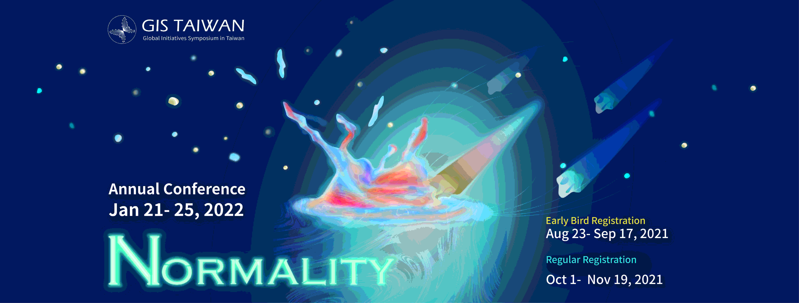

Annual Theme
Reset the Mindset
In this information explosion era, we are delighted to find ourselves keeping up with the trend; we chase after new trends and new technologies because we believe that technological innovation will assuredly bring progress to the entire human world. We are accustomed to only finding solutions to problems that lie on the surface. We are proud of having optimal ideals and visions and we believe that we can make constructive and powerful influences on the world.
However, we often forget to overlook the full-picture of the problem. We rarely try to explore the reasons why these problems occur and dig into the their origins. Are these problems we see really the main problems we need to find solutions to? We generally focus too much on how to plant beautiful flowers, but not on how to plant strong and healthy roots, forgetting to consider the stability of the roots and whether it needs more care and support. We are used to only looking forward to the future and we forget to trace back to roots to get the complete picture of a situation.
As a result, this year, we want to transform the traditional thinking model, reset the thinking perspective, reexamine what we familiarise ourselves as the standard of thinking routines, and explore problems with the old thinking model. By doing so, we can take a full look of the complete picture of the problem, and redefine the roots of the problems.
GIS Taiwan 2020 will bring together elites from all fields, including industries, government and academia, to provide a platform for young people to communicate freely, so that delegates can have a more inclusive attitude and deeper understanding on those so-called "problems" and explore the nature of those issues. After understanding the crux of the problem, the delegates will be able to break through the existing rigid thinking system through interactions and discussions, and create infinite possibilities that belong to us.
The Structure of Academic Topics
After inquiring professors, authority concerns, and mentors in industry from diverse fields, the organizing committee of GIS Taiwan gathered and promoted academic topics with regard to latest trends worldwide.
Reset the Mindset
Data Surge
Green Action
Social Stigma
Capital Redefined
Action Project Competition
Rather than simply being an academic exchange platform, GIS Taiwan emphasizes more on practical approaches. Thus, professional knowledge we cultivate from every academic topic speech is applied to respective industrial fields. GIS Taiwan expects that after listening to the speeches delivered by outstanding speakers, each delegate will have the motivation to make a difference and further come up with creative ideas.
By action project, GIS Taiwan hopes to provide an environment where students and the industry can exchange great ideas and turn those concepts into practical projects. Meeting excellent people, hearing different voices, GIS Taiwan welcomes every unique idea and is looking forward to making a difference together.